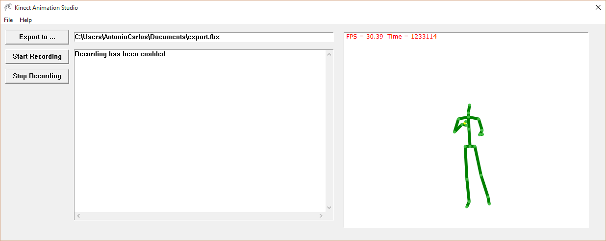

Introduction
KinectAnimationStudio is a simple tool that can be used to export Kinect Skeleton data as Autodesk FBX files.
Advantages
- No installation;
- Works with live capture or pre-recorded data (through Kinect Studio);
- Supports multiple skeletons;
- Straightforward use. Does not require setting additional parameters.
Download (latest release)
System Requirements
- Windows 8 or later.
- 64-bit (x64) processor
- Kinect SDK 2.0
